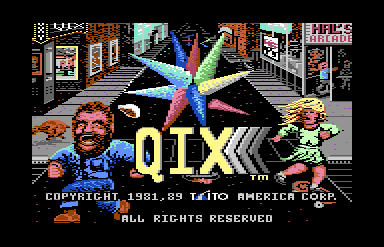
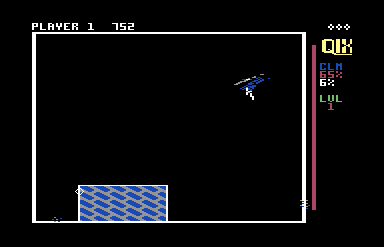
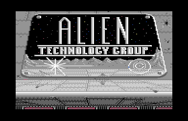
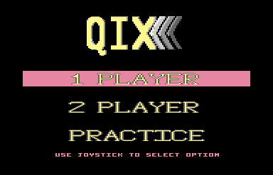

<meta charset="utf-8">
<meta name="viewport" content="width=device-width, initial-scale=1">
<title>Qix</title>
<link rel="preconnect" href="https://fonts.googleapis.com">
<link rel="stylesheet" href="https://fonts.googleapis.com/css2?family=Lato:wght@400;700;900&family=IBM+Plex+Mono:wght@400;500&display=swap">
<style>
:root{
  --bg:#23262d; --paper:#e9e7e1; --surface:#ffffff; --surface-2:#f1efea; --line:#d5d3cc; --line-soft:#e0ded8;
  --ink:#2f3136; --ink-soft:#55585f; --ink-mute:#80838a;
  --link:#1f5fa8; --link-hover:#154480; --accent:#1f5fa8;
  --amber:#c25a00; --cyan:#1f5fa8; --coral:#d04a3a; --green:#2a8a4a; --violet:#4a5bd6; --hl:#fff0c2;
  --chip:#2f3136; --chip-ink:#ffffff;
  --c64blue:#40318d; --c64grey:#686868;
  --fd:'Lato',system-ui,sans-serif; --fb:'Lato',system-ui,sans-serif; --fm:'IBM Plex Mono',ui-monospace,Menlo,monospace;
  --col:1080px; --gx:68px; --fs:17px; --lh:1.6; --hw:900; --h1:46px; --h2:26px; --sy:48px; --pp:26px; --r:10px;
  --plate-shadow:0 1px 2px rgba(0,0,0,.05),0 4px 14px rgba(0,0,0,.05);
}
*{box-sizing:border-box}
html{background:var(--bg);min-height:100%}
body{background:var(--paper);color:var(--ink);font-family:var(--fb);font-size:var(--fs);line-height:var(--lh);max-width:var(--col);margin:0 auto;min-height:100vh;padding:0 0 4rem}
h1,h2,h3{font-weight:var(--hw);letter-spacing:-.01em;text-wrap:balance;color:var(--ink);margin:0}
.wrap{padding:0 var(--gx)}
.hero{padding:48px var(--gx) 8px;text-align:left}
.eyebrow{font-family:var(--fm);font-size:12px;letter-spacing:.08em;text-transform:uppercase;color:var(--ink-mute);margin:0 0 10px}
.hero h1{font-size:var(--h1);line-height:1.15;letter-spacing:-.02em;margin:0 0 14px}
.hero .sub{margin:0 0 .6em;color:var(--ink-soft)}
section{padding:var(--sy) 0 24px}
section:last-of-type{border-bottom:none}
.fig{font-family:var(--fm);font-size:12px;letter-spacing:.08em;text-transform:uppercase;color:var(--ink-mute);margin:0 0 10px}
h2.t{font-size:var(--h2);margin-bottom:12px}
.lede{color:var(--ink-soft);margin:0 0 30px}
.plate{background:var(--surface);border:1px solid var(--line);border-radius:var(--r);padding:var(--pp);box-shadow:var(--plate-shadow)}
.cap{font-size:14px;color:var(--ink-mute);margin-top:14px;line-height:1.55}
.cap b{color:var(--ink);font-weight:700}
code{font-family:var(--fm);font-size:.82em;background:var(--chip);color:var(--chip-ink);border-radius:4px;padding:2px 6px;white-space:nowrap}
.qx-pair{display:flex;gap:18px;flex-wrap:wrap}
.qx-pair figure{margin:0;flex:1 1 300px}
.qx-pair img,.qx-cv{width:100%;image-rendering:pixelated;border-radius:4px;display:block}
.qx-ctl{display:flex;gap:10px;flex-wrap:wrap;align-items:center;margin:0 0 14px;font-size:15px}
.qx-ctl button{font-size:14px;padding:5px 12px}.qx-ctl select{font-size:14px}
.qx-ctl input[type=number]{width:7em;padding:4px 8px}
.qx-key{display:flex;gap:16px;flex-wrap:wrap;font-size:14px;color:var(--ink-soft);margin-top:10px}
.qx-key i{display:inline-block;width:12px;height:12px;border-radius:2px;margin-right:6px;vertical-align:-1px}
.qx-tab{border-collapse:collapse;width:100%;font-size:14px}
.qx-tab th,.qx-tab td{border-bottom:1px solid var(--line-soft);padding:6px 8px;text-align:left;vertical-align:top}
.qx-tab th{font-weight:700;color:var(--ink-soft)}
.qx-tab td.qx-on{background:var(--hl)}
.qx-out{font-family:var(--fm);font-size:15px}
.qx-out b{font-size:20px}
.qx-miss{font-size:14px;color:var(--coral)}
.qx-scroll{overflow-x:auto}
.qm-wrap{display:flex;gap:18px;flex-wrap:wrap;align-items:flex-start}
.qm-cv{flex:2 1 320px;max-width:560px;background:#000}
.qm-side{flex:1 1 220px;min-width:0}
.qm-read{color:var(--ink);font-family:var(--fm);font-size:13px;line-height:1.5;margin:0 0 10px;padding:10px 12px;background:var(--surface-2);border-radius:6px;white-space:pre-wrap}
.qm-log{font-family:var(--fm);font-size:12px;line-height:1.45;color:var(--ink-soft);margin:0;padding:0;list-style:none;max-height:220px;overflow:auto}
.qm-log li{margin:0 0 4px}
.qm-log b{color:var(--ink-mute);font-weight:400}
.qm-log li.qm-k{color:var(--coral);font-weight:500}
.qm-log li.qm-f{color:var(--amber)}
@media (max-width:640px){:root{--gx:18px;--h1:36px;--pp:16px}}
.ov-pair{display:flex;gap:18px;flex-wrap:wrap;margin:0 0 22px}
.ov-pair figure{margin:0;flex:1 1 280px}
.ov-pair img{width:100%;image-rendering:pixelated;border-radius:4px;display:block}
.ov-pair figcaption{font-size:14px;color:var(--ink-mute);margin-top:6px}
.ov-scroll{overflow-x:auto;margin:0 0 22px}
blockquote.ov-q{margin:0 0 18px;padding:2px 0 2px 16px;border-left:3px solid var(--line);color:var(--ink-soft)}
</style>
<!-- tabs -->
<header class="hero">
  <p class="eyebrow">1989 · Taito America</p>
  <h1>Qix</h1>
  <p class="sub">Qix is a game of drawing boxes. You steer a small marker round the edge of an empty field, and with the fire button held it leaves the edge and draws a line across the open space. When the line meets the edge again, the part of the field without the Qix fills in and becomes yours. The Qix is a bundle of lines that wanders the field at random, and if it touches the line you are drawing, you lose a life. Sparx run round the edges after you, a Fuse burns along a line you stop drawing, and from level 5 small creatures called Spritz fly about the open field. Each level asks you to claim a share of the screen, 65 % at first and 80 % by level 9. Randy and Sandy Pfeiffer designed Qix for the arcades of Taito's American division in 1981. This Commodore 64 version came out in 1989, published by Taito America itself with versions for the Amiga, Apple IIGS and PC, and sold as "The Computer Virus Game". Its loading screen names Alien Technology Group as the developer, and its music is credited to Tim Follin.</p>
</header>
<main class="wrap">

<section>
  <p class="fig">01 · The game</p>
  <h2 class="t">Claim the screen, avoid the Qix</h2>
  <div class="ov-pair">
    <figure><figcaption>The title picture, loaded from disk with the game.</figcaption></figure>
    <figure><figcaption>Level 1 with 6 % claimed: the patterned block, the Qix (the blue lines), the Sparx on the edge, and the timer bar on the right.</figcaption></figure>
  </div>
  <p>You play a marker that lives on the edges of the field. On the edge it is safe from the Qix. Hold fire and push into the open field, and the marker draws a line behind it; bring the line back to any edge, and the side without the Qix is filled with a pattern and counted as claimed. A fill is worth half its area in points. A line drawn with fire held all the way moves at half speed and scores double; a line drawn with fire let go is quicker, and scores less. The panel on the right shows how much the level asks for, how much you have claimed, and the level.</p>
  <p>Four things can take a life. The Qix kills when it touches a line you are drawing. Sparx run along the edges and kill on contact, more of them each time the timer bar beside the field runs out, and from level 3 some follow you up your line. If you stop in the middle of a line, a Fuse appears at its start and burns along it towards you. From level 5, Spritz fly about the open field; trapping one in a fill is worth extra points. You start with three lives and gain one every 50,000 points, up to five.</p>
  <p>A level ends when your claim reaches its target, and every percent over it is worth 1,000 points. Some levels from level 3 on have two Qix: wall them into separate regions, and the level ends at once; the manual promises that every fill after a split scores more (<a href="discoveries.html#scoring">Discoveries</a> shows what the code does). The menu offers one player, two players taking turns, or a practice game of one level. When the last life is lost, the game loads itself from disk again. <a href="mechanics.html">How it works</a> shows the code behind these rules, and <a href="controls.html">Controls</a> what the stick and keys do.</p>
</section>

<section>
  <p class="fig">02 · The release</p>
  <h2 class="t">An arcade game of 1981, brought home by Taito America in 1989</h2>
  <div class="ov-pair">
    <figure><figcaption>The loading screen, the only credit in the program.</figcaption></figure>
    <figure><figcaption>The menu after the title.</figcaption></figure>
  </div>
  <p>Qix began as an arcade game. Randy Pfeiffer wrote the Qix's wandering movement as a programming demonstration, and his wife Sandy suggested making a game of it, a kind of video Etch A Sketch. Taito's American division released it in October 1981, one of the few arcade games that division made itself. The name came from the licence plate on Randy Pfeiffer's car, JUS4QIX, read as "just for kicks". Qix was the fifth highest-earning arcade game of 1981 in Japan, but it did not last long in American arcades. Taito's Keith Egging told Electronic Games that the game was "conceptually too mystifying for gamers".</p>
  <p>Eight years later Taito America published Qix for home computers itself, from an office in North Vancouver, Canada: on the Commodore 64 and 128, the Amiga, the Apple IIGS and the PC. The box and the advertisements called it "The 'Computer Virus' Game", with the Qix a virus inside your computer, and Computer Gaming World listed it at $34.95. The C64 version's title screen reads COPYRIGHT 1981,89 TAITO AMERICA CORP., and its loading screen shows the name of Alien Technology Group, which game databases credit with Taito's other 1989 versions too. The program names no programmer or artist. One retro gaming site credits the C64 version to Threshold Research instead; the loading screen is the only credit the game itself gives.</p>
  <p>The music is credited to Tim Follin, a British composer known for his C64 and Spectrum soundtracks, by the Internet Archive's recording of it, dated July 1989, and by music archives; the program does not name him. The King of Grabs gives it a release in North America only. The copy studied on this site is a cracked disk that runs only on an American NTSC machine, and the game patches its music player so that the tunes keep the same tempo on a European machine (<a href="music.html">Music</a>).</p>
</section>

<section>
  <p class="fig">03 · Reception</p>
  <h2 class="t">Too slow for a fan of the arcade original</h2>
  <div class="plate ov-scroll">
    <table class="qx-tab">
      <tr><th>Source</th><th>Version</th><th>Verdict</th></tr>
      <tr><td>Info, issue 28, September/October 1989, page 45 (Mark R. Brown)</td><td>Commodore 64</td><td>"C64 Qix is a disappointment"; Lemon64 gives its score as 3 out of 5</td></tr>
      <tr><td>Computer Gaming World, issue 64, October 1989, page 39 (Russell Sipe)</td><td>Amiga and Commodore 64</td><td>"a fascinating game", "highly recommended"; no score</td></tr>
    </table>
    <p class="cap"><b>The two reviews found.</b> Both are read from scans of the magazines on the Internet Archive (sources below). The star rating in Info did not survive the scan's text.</p>
  </div>
  <p>Info, an American magazine for Commodore owners, reviewed the C64 version in its September/October 1989 issue. Mark R. Brown called Qix one of his "all-time favorite quarter-eaters" and found the C64 version a disappointment. He disliked the "garish pattern fills", which replace the arcade's solid colours, and the "Computer Virus" slogan, which he thought cashed in on the virus scares of the day in poor taste. His main complaint was the speed: "this version plays like molasses... the line drawing, especially in Fast mode, crawls when compared to the arcade original." He ended: "I really wanted to like this game a lot. But I don't." The game's main loop, which moves the Qix one step each time, runs about 14 times a second on the C64 (<a href="mechanics.html#the-qix">How it works</a>).</p>
  <blockquote class="ov-q">"QIX is a fascinating game. It is highly recommended to those who are at one with the universe; to those who are prepared to pursue purposeful strategy in the face of intense action." Russell Sipe, Computer Gaming World, October 1989</blockquote>
  <p>Computer Gaming World's Russell Sipe, reviewing the Amiga and C64 versions together, wrote about strategy rather than the conversion. He described the trapping tactics that college players had named in the arcade days, the MIT fork, the Harvard tree and the Stanford spiral, and preferred the fork, quicker to build than the tree. He distrusted the spiral, which squeezes the Qix into a space where it bounces more often. He found the virus story weak but forgave it, since "this game is so unique that any fictional background would be found wanting".</p>
</section>

<section>
  <p class="fig">04 · Sources</p>
  <h2 class="t">Where these facts come from</h2>
  <ul>
    <li>The game itself: its title screen, loading screen and menu (<a href="reference/title.png">title</a>, <a href="reference/loading-alien-technology.png">loading screen</a>, <a href="reference/menu.png">menu</a>), and play, run in the emulator; the rules are traced on How it works.</li>
    <li>Info, issue 28, September/October 1989, pages 44-45, the review of Qix by Mark R. Brown, and the Taito advertisement in the same issue: scan on the Internet Archive, <a href="https://archive.org/details/Info_Issue_28_1989-09_Info_Publications_US">archive.org/details/Info_Issue_28_1989-09_Info_Publications_US</a>, read 20 November 2026.</li>
    <li>Computer Gaming World, issue 64, October 1989, page 39, "What Do You Do For QIX?" by Russell Sipe: scan on the Internet Archive, <a href="https://archive.org/details/computer-gaming-world-i64">archive.org/details/computer-gaming-world-i64</a>, read 20 November 2026.</li>
    <li>Lemon64, "Qix", <a href="https://www.lemon64.com/game/qix-taito">www.lemon64.com/game/qix-taito</a>: the Info review's score of 3 out of 5 and the credit to Tim Follin, as search results quoted the page on 20 November 2026 (the page itself refused the request).</li>
    <li>Wikipedia, "Qix", <a href="https://en.wikipedia.org/wiki/Qix">en.wikipedia.org/wiki/Qix</a>, read 20 November 2026: the designers, the arcade release, its earnings in Japan and Keith Egging's words to Electronic Games.</li>
    <li>Matt Sephton, "JUS4QIX: the story of a classic arcade video game", 22 July 2003, <a href="https://blog.gingerbeardman.com/2003/07/22/jus4qix-the-story-of-a-classic-arcade-video-game/">blog.gingerbeardman.com</a>, read 20 November 2026: Randy Pfeiffer on the demonstration, the Etch A Sketch idea and the licence plate.</li>
    <li>ExoticA, "Qix - The 'Computer Virus' Game", <a href="https://www.exotica.org.uk/wiki/Qix">www.exotica.org.uk/wiki/Qix</a>, and Giant Bomb's release list, <a href="https://www.giantbomb.com/qix/3030-6136/releases/">www.giantbomb.com</a>, as search results quoted them on 20 November 2026: Alien Technology Group and Tim Follin credited for the 1989 versions.</li>
    <li>The King of Grabs, "Qix (Commodore 64)", 8 September 2024, <a href="https://thekingofgrabs.com/2024/09/08/qix-commodore-64/">thekingofgrabs.com</a>, read 20 November 2026: the credit to Threshold Research and the release in North America only.</li>
    <li>Internet Archive, "tim-follin-qix-c64", <a href="https://archive.org/details/tim-follin-qix-c64">archive.org/details/tim-follin-qix-c64</a>, read 10 October 2026: the recording of the C64 music, credited to Tim Follin and dated July 1989.</li>
  </ul>
</section>

</main>
<footer style="margin:16px 0 0;padding:22px var(--gx) 0;border-top:1px solid #e0ded8;font-family:'IBM Plex Mono',ui-monospace,Menlo,monospace;font-size:12px;color:#80838a"><a href="https://github.com/gamesexplained/gamesexplained" aria-label="GitHub" style="display:inline-flex;align-items:center;justify-content:center;width:26px;height:26px;margin-left:8px;border:1px solid #e0ded8;border-radius:7px;background:#ffffff;color:#80838a;vertical-align:middle"><svg width="15" height="15" viewBox="0 0 24 24" fill="currentColor" aria-hidden="true"><path d="M12 .297c-6.63 0-12 5.373-12 12 0 5.303 3.438 9.8 8.205 11.385.6.113.82-.258.82-.577 0-.285-.01-1.04-.015-2.04-3.338.724-4.042-1.61-4.042-1.61C4.422 18.07 3.633 17.7 3.633 17.7c-1.087-.744.084-.729.084-.729 1.205.084 1.838 1.236 1.838 1.236 1.07 1.835 2.809 1.305 3.495.998.108-.776.417-1.305.76-1.605-2.665-.3-5.466-1.332-5.466-5.93 0-1.31.465-2.38 1.235-3.22-.135-.303-.54-1.523.105-3.176 0 0 1.005-.322 3.3 1.23.96-.267 1.98-.399 3-.405 1.02.006 2.04.138 3 .405 2.28-1.552 3.285-1.23 3.285-1.23.645 1.653.24 2.873.12 3.176.765.84 1.23 1.91 1.23 3.22 0 4.61-2.805 5.625-5.475 5.92.42.36.81 1.096.81 2.22 0 1.606-.015 2.896-.015 3.286 0 .315.21.69.825.57C20.565 22.092 24 17.592 24 12.297c0-6.627-5.373-12-12-12"/></svg></a><a href="https://discord.gg/3V9GWyRDWV" aria-label="Discord" style="display:inline-flex;align-items:center;justify-content:center;width:26px;height:26px;margin-left:8px;border:1px solid #e0ded8;border-radius:7px;background:#ffffff;color:#80838a;vertical-align:middle"><svg width="15" height="15" viewBox="0 0 24 24" fill="currentColor" aria-hidden="true"><path d="M20.317 4.3698a19.7913 19.7913 0 00-4.8851-1.5152.0741.0741 0 00-.0785.0371c-.211.3753-.4447.8648-.6083 1.2495-1.8447-.2762-3.68-.2762-5.4868 0-.1636-.3933-.4058-.8742-.6177-1.2495a.077.077 0 00-.0785-.037 19.7363 19.7363 0 00-4.8852 1.515.0699.0699 0 00-.0321.0277C.5334 9.0458-.319 13.5799.0992 18.0578a.0824.0824 0 00.0312.0561c2.0528 1.5076 4.0413 2.4228 5.9929 3.0294a.0777.0777 0 00.0842-.0276c.4616-.6304.8731-1.2952 1.226-1.9942a.076.076 0 00-.0416-.1057c-.6528-.2476-1.2743-.5495-1.8722-.8923a.077.077 0 01-.0076-.1277c.1258-.0943.2517-.1923.3718-.2914a.0743.0743 0 01.0776-.0105c3.9278 1.7933 8.18 1.7933 12.0614 0a.0739.0739 0 01.0785.0095c.1202.099.246.1981.3728.2924a.077.077 0 01-.0066.1276 12.2986 12.2986 0 01-1.873.8914.0766.0766 0 00-.0407.1067c.3604.698.7719 1.3628 1.225 1.9932a.076.076 0 00.0842.0286c1.961-.6067 3.9495-1.5219 6.0023-3.0294a.077.077 0 00.0313-.0552c.5004-5.177-.8382-9.6739-3.5485-13.6604a.061.061 0 00-.0312-.0286zM8.02 15.3312c-1.1825 0-2.1569-1.0857-2.1569-2.419 0-1.3332.9555-2.4189 2.157-2.4189 1.2108 0 2.1757 1.0952 2.1568 2.419 0 1.3332-.9555 2.4189-2.1569 2.4189zm7.9748 0c-1.1825 0-2.1569-1.0857-2.1569-2.419 0-1.3332.9554-2.4189 2.1569-2.4189 1.2108 0 2.1757 1.0952 2.1568 2.419 0 1.3332-.946 2.4189-2.1568 2.4189Z"/></svg></a><br>© Games Explained contributors. Write-ups, facts and symbol maps are available under <a href="https://creativecommons.org/licenses/by-sa/4.0/" style="color:#1f5fa8;text-decoration:none">CC BY-SA 4.0</a>; code under <a href="https://opensource.org/licenses/MIT" style="color:#1f5fa8;text-decoration:none">MIT</a></footer>
